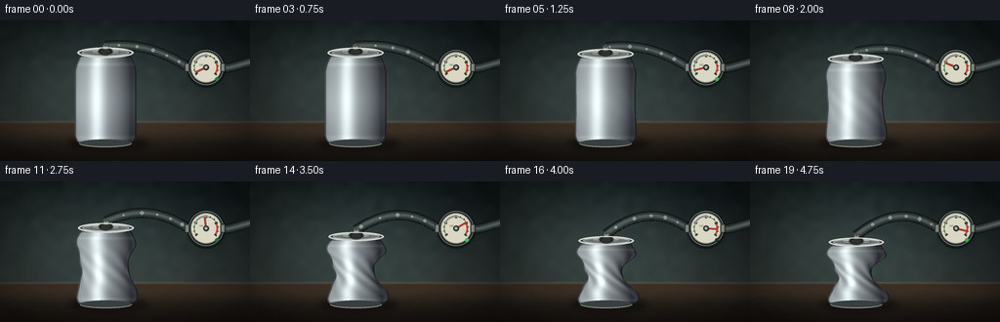
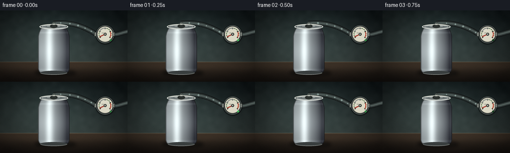
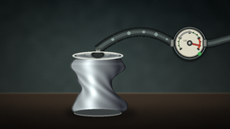
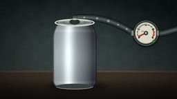
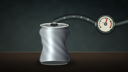

CODING AGENTS AS PIXEL WORLD MODELS
traex/DeepSeek-V4.1-Flash · phygen_017
点击播放 · 原生 RGB 像素
逐轮保存的候选
回放视频、检查图与代码变化。
每份候选均可单独播放。实际图片检查记录在下方工具轨迹中。
候选 01播放与检查图
点击播放 · 原生 RGB 像素

展开代码变化
--- 上一保存版本
+++ 本次保存版本
@@ -0,0 +1,364 @@
+from pathlib import Path
+import math
+
+import numpy as np
+from PIL import Image, ImageDraw, ImageFilter
+
+import artifact_io
+
+
+W, H = 256, 144
+SS = 4
+WS, HS = W * SS, H * SS
+N_FRAMES = 20
+
+
+def smoothstep(x):
+ x = np.clip(x, 0.0, 1.0)
+ return x * x * (3.0 - 2.0 * x)
+
+
+def cubic(p0, p1, p2, p3, t):
+ omt = 1.0 - t
+ return (
+ (omt ** 3) * np.asarray(p0)
+ + 3.0 * (omt ** 2) * t * np.asarray(p1)
+ + 3.0 * omt * (t ** 2) * np.asarray(p2)
+ + (t ** 3) * np.asarray(p3)
+ )
+
+
+def make_background(rng):
+ y = np.arange(HS, dtype=np.float32)[:, None]
+ x = np.arange(WS, dtype=np.float32)[None, :]
+ yn = y / (HS - 1) + np.zeros((1, WS), dtype=np.float32)
+ xn = x / (WS - 1) + np.zeros((HS, 1), dtype=np.float32)
+
+ wall_top = np.array([17, 25, 27], dtype=np.float32)
+ wall_bottom = np.array([49, 58, 56], dtype=np.float32)
+ wall_t = np.clip(yn / 0.72, 0.0, 1.0)
+ wall = wall_top[None, None, :] + (wall_bottom - wall_top)[None, None, :] * wall_t[..., None]
+
+ # A restrained pool of studio light behind the subject.
+ glow = np.exp(-(((xn - 0.43) / 0.34) ** 2 + ((yn - 0.44) / 0.46) ** 2))
+ wall += glow[..., None] * np.array([14, 18, 17], dtype=np.float32)
+
+ # Concrete-like low-frequency texture.
+ coarse = rng.normal(0.0, 1.0, (18, 32)).astype(np.float32)
+ coarse = np.asarray(
+ Image.fromarray(((coarse - coarse.min()) / (coarse.max() - coarse.min()) * 255).astype(np.uint8))
+ .resize((WS, HS), Image.Resampling.BICUBIC)
+ .filter(ImageFilter.GaussianBlur(1.2 * SS))
+ ).astype(np.float32)
+ wall += (coarse[..., None] - 127.0) * 0.045
+
+ table_y = 104.0 * SS
+ table_mask = (y >= table_y).astype(np.float32)
+ table_t = np.clip((y - table_y) / (HS - table_y), 0.0, 1.0) + np.zeros((1, WS), dtype=np.float32)
+ table = np.array([59, 48, 38], dtype=np.float32)[None, None, :] * np.ones_like(table_t[..., None])
+ table += np.array([-35, -28, -21], dtype=np.float32)[None, None, :] * table_t[..., None]
+
+ # Fine horizontal grain and a soft reflected strip.
+ grain = np.sin(y * 0.074 + np.sin(x * 0.019) * 2.2) * 1.4
+ table += grain[..., None] * np.array([0.45, 0.34, 0.25])
+ table += np.exp(-(((yn - 0.79) / 0.065) ** 2))[..., None] * np.array([11, 9, 7])
+ img = wall * (1.0 - table_mask[..., None]) + table * table_mask[..., None]
+
+ # Thin, slightly illuminated table edge.
+ edge = np.exp(-(((y - table_y) / (1.1 * SS)) ** 2))
+ img += edge[..., None] * np.array([24, 21, 16])
+
+ # Soft vignette and tiny sensor grain.
+ vignette = np.clip(1.0 - 0.52 * (((xn - 0.5) / 0.63) ** 2 + ((yn - 0.49) / 0.76) ** 2), 0.56, 1.0)
+ img *= vignette[..., None]
+ img += rng.normal(0.0, 1.8, (HS, WS, 1))
+ return np.clip(img, 0, 255).astype(np.uint8)
+
+
+def draw_tube(base, attach, frame_index):
+ layer = Image.new("RGBA", (WS, HS), (0, 0, 0, 0))
+ draw = ImageDraw.Draw(layer)
+
+ gauge_c = np.array([211.0, 48.0]) * SS
+ left_port = gauge_c + np.array([-18.0, 0.0]) * SS
+ right_port = gauge_c + np.array([18.0, 0.0]) * SS
+
+ # The tube bends and settles as the can loses height.
+ p0 = np.asarray(attach) * SS
+ p1 = np.array([148.0, 22.0 + 0.12 * frame_index]) * SS
+ p2 = np.array([174.0, 36.0]) * SS
+ p3 = left_port
+ ts = np.linspace(0.0, 1.0, 90)
+ pts = np.array([cubic(p0, p1, p2, p3, t) for t in ts])
+ outer = [tuple(p) for p in pts]
+ draw.line(outer, fill=(20, 24, 24, 255), width=11 * SS, joint="curve")
+ draw.line(outer, fill=(47, 55, 54, 255), width=7 * SS, joint="curve")
+ draw.line(outer, fill=(75, 86, 84, 255), width=3 * SS, joint="curve")
+ highlight = [tuple(p + np.array([-1.1, -1.1]) * SS) for p in pts]
+ draw.line(highlight, fill=(122, 134, 129, 130), width=1 * SS, joint="curve")
+
+ # Air moving through the clear section toward the vacuum source.
+ for k in range(5):
+ u = (0.12 + 0.18 * k + 0.021 * frame_index) % 0.91
+ p = cubic(p0, p1, p2, p3, u)
+ r = (1.2 + 0.35 * ((k + frame_index) % 3)) * SS
+ draw.ellipse((p[0] - r, p[1] - r, p[0] + r, p[1] + r), fill=(204, 229, 220, 145))
+
+ # Short exhaust section from gauge to the pump at frame right.
+ p0 = right_port
+ p1 = np.array([232.0, 50.0]) * SS
+ p2 = np.array([245.0, 45.0]) * SS
+ p3 = np.array([258.0, 42.0]) * SS
+ pts = np.array([cubic(p0, p1, p2, p3, t) for t in np.linspace(0, 1, 28)])
+ outer = [tuple(p) for p in pts]
+ draw.line(outer, fill=(19, 23, 23, 255), width=11 * SS, joint="curve")
+ draw.line(outer, fill=(48, 56, 55, 255), width=7 * SS, joint="curve")
+ draw.line(outer, fill=(79, 90, 87, 255), width=3 * SS, joint="curve")
+
+ return Image.alpha_composite(base, layer)
+
+
+def draw_gauge(base, vacuum, frame_index):
+ layer = Image.new("RGBA", (WS, HS), (0, 0, 0, 0))
+ draw = ImageDraw.Draw(layer)
+ cx, cy = 211.0 * SS, 48.0 * SS
+ r = 18.0 * SS
+
+ draw.ellipse((cx - r - 2 * SS, cy - r - 1 * SS, cx + r + 2 * SS, cy + r + 3 * SS), fill=(7, 10, 10, 125))
+ draw.ellipse((cx - r, cy - r, cx + r, cy + r), fill=(24, 29, 30, 255), outline=(104, 112, 108, 255), width=1 * SS)
+ face_r = r - 2.2 * SS
+ draw.ellipse((cx - face_r, cy - face_r, cx + face_r, cy + face_r), fill=(218, 215, 197, 255))
+ draw.ellipse((cx - face_r, cy - face_r, cx + face_r, cy + face_r), outline=(121, 121, 110, 255), width=1 * SS)
+
+ a0, a1 = math.radians(145.0), math.radians(395.0)
+ bbox = (cx - face_r * 0.79, cy - face_r * 0.79, cx + face_r * 0.79, cy + face_r * 0.79)
+ draw.arc(bbox, math.degrees(a0), math.degrees(a1), fill=(103, 142, 91, 255), width=1 * SS)
+ draw.arc(bbox, 330, 395, fill=(190, 76, 55, 255), width=2 * SS)
+
+ for i in range(13):
+ ang = a0 + (a1 - a0) * i / 12.0
+ r1 = face_r * (0.74 if i % 3 else 0.66)
+ r2 = face_r * 0.84
+ p1 = (cx + r1 * math.cos(ang), cy + r1 * math.sin(ang))
+ p2 = (cx + r2 * math.cos(ang), cy + r2 * math.sin(ang))
+ draw.line((p1, p2), fill=(54, 57, 53, 255), width=(2 if i % 3 == 0 else 1) * SS)
+
+ # A tiny VAC marking remains legible at the native resolution.
+ draw.text((cx - 7.0 * SS, cy - 4.0 * SS), "VAC", fill=(75, 78, 70, 255))
+
+ needle_ang = a0 + (a1 - a0) * (0.035 + 0.88 * vacuum)
+ needle_len = face_r * 0.78
+ nx = cx + needle_len * math.cos(needle_ang)
+ ny = cy + needle_len * math.sin(needle_ang)
+ draw.line((cx, cy, nx, ny), fill=(126, 41, 33, 255), width=2 * SS)
+ draw.line((cx, cy, nx, ny), fill=(196, 69, 52, 255), width=1 * SS)
+ draw.ellipse((cx - 3 * SS, cy - 3 * SS, cx + 3 * SS, cy + 3 * SS), fill=(50, 53, 51, 255))
+ draw.ellipse((cx - 1.3 * SS, cy - 1.3 * SS, cx + 1.3 * SS, cy + 1.3 * SS), fill=(179, 181, 167, 255))
+
+ # Glass reflection and active indicator.
+ draw.arc((cx - face_r * 0.78, cy - face_r * 0.83, cx + face_r * 0.7, cy + face_r * 0.58), 198, 285, fill=(255, 255, 245, 125), width=2 * SS)
+ pulse = 0.65 + 0.35 * math.sin(frame_index * 1.45)
+ led = tuple(np.array([68, 185, 91]) * pulse)
+ draw.ellipse((cx + 9 * SS, cy + 10 * SS, cx + 13 * SS, cy + 14 * SS), fill=tuple(int(v) for v in led) + (255,))
+
+ # Metal ports on both sides.
+ for px in (cx - r - 1.5 * SS, cx + r - 1.0 * SS):
+ draw.rounded_rectangle((px - 2.5 * SS, cy - 4.5 * SS, px + 2.5 * SS, cy + 4.5 * SS), radius=1.5 * SS, fill=(125, 130, 124, 255), outline=(42, 47, 45, 255), width=1 * SS)
+
+ return Image.alpha_composite(base, layer)
+
+
+def body_geometry(collapse, frame_index):
+ bottom = 126.0
+ top0 = 33.0
+ height0 = 93.0
+ height = height0 * (1.0 - 0.315 * collapse)
+ top = bottom - height
+ body_top = top + 3.2
+ body_bottom = bottom - 1.0
+
+ u = np.clip((body_bottom - np.arange(HS, dtype=np.float32) / SS) / max(body_bottom - body_top, 1.0), 0.0, 1.0)
+ radius = 31.6 * np.ones_like(u)
+ radius *= 1.0 - 0.18 * np.clip((u - 0.80) / 0.20, 0.0, 1.0) ** 1.7
+ radius *= 1.0 - 0.09 * np.clip((0.09 - u) / 0.09, 0.0, 1.0) ** 1.4
+
+ mid_pinch = np.exp(-(((u - 0.46) / 0.23) ** 2))
+ lower_pinch = np.exp(-(((u - 0.68) / 0.12) ** 2))
+ radius *= 1.0 - collapse * (0.44 * mid_pinch + 0.13 * lower_pinch)
+ radius *= 1.0 + collapse * 0.055 * (
+ np.exp(-(((u - 0.16) / 0.12) ** 2)) + np.exp(-(((u - 0.82) / 0.10) ** 2))
+ )
+
+ asym = collapse * 0.095 * np.sin(2.0 * math.pi * (1.35 * u + 0.08))
+ folds = collapse * (0.022 + 0.035 * mid_pinch) * np.sin(2.0 * math.pi * (3.4 * u + 0.13))
+ left_r = radius * (1.0 - asym + folds)
+ right_r = radius * (1.0 + asym * 0.72 - folds * 0.6)
+ center_shift = collapse * 1.45 * np.sin(2.0 * math.pi * (0.92 * u + 0.04))
+ center_shift += collapse * 0.55 * np.sin(2.0 * math.pi * (2.7 * u + 0.3))
+ cx = 108.0 + center_shift
+
+ return {
+ "bottom": bottom,
+ "top": top,
+ "body_top": body_top,
+ "body_bottom": body_bottom,
+ "u": u,
+ "left": (cx - left_r) * SS,
+ "right": (cx + right_r) * SS,
+ "center": cx * SS,
+ "radius": radius,
+ "top_radius": radius[-1] * (1.0 - 0.015 * collapse),
+ }
+
+
+def render_can_body(base, geom, collapse):
+ x = np.arange(WS, dtype=np.float32)[None, :]
+ y = np.arange(HS, dtype=np.float32)[:, None]
+ left = geom["left"][:, None]
+ right = geom["right"][:, None]
+ center = geom["center"][:, None]
+ u = geom["u"][:, None]
+ body_top = geom["body_top"] * SS
+ body_bottom = geom["body_bottom"] * SS
+
+ inside = (y >= body_top) & (y <= body_bottom) & (x >= left) & (x <= right)
+ width = np.maximum(right - left, 1.0)
+ s = np.clip(2.0 * (x - center) / width, -0.999, 0.999)
+ z = np.sqrt(np.maximum(1.0 - s * s, 0.0))
+ theta = np.arcsin(s)
+
+ light = np.array([-0.52, -0.27, 0.81], dtype=np.float32)
+ light /= np.linalg.norm(light)
+ diff = np.clip(s * light[0] + 0.07 * light[1] + z * light[2], 0.0, 1.0)
+ half_vec = light + np.array([0.0, 0.0, 1.0], dtype=np.float32)
+ half_vec /= np.linalg.norm(half_vec)
+ spec = np.clip(s * half_vec[0] + 0.07 * half_vec[1] + z * half_vec[2], 0.0, 1.0) ** 31
+
+ fold_pattern = np.sin(8.3 * theta + 8.2 * u * math.pi + 0.6)
+ fold_env = np.exp(-(((u - 0.47) / 0.29) ** 2))
+ fold_shade = collapse * 0.13 * fold_pattern * fold_env
+ brushed = 0.018 * np.sin(x * 3.8 + np.sin(y * 0.18) * 2.0)
+ bands = (
+ np.exp(-(((u - 0.055) / 0.025) ** 2))
+ + np.exp(-(((u - 0.905) / 0.024) ** 2))
+ ) * 0.075
+ rim_light = 0.08 * ((1.0 - z) ** 2)
+
+ lum = 0.20 + 0.64 * diff + 0.42 * spec + 0.12 * fold_env
+ lum = lum + fold_shade + brushed + bands + rim_light
+ base_silver = np.array([0.72, 0.76, 0.77], dtype=np.float32)
+ rgb = base_silver[None, None, :] * np.clip(lum, 0.0, 1.18)[..., None]
+ rgb += spec[..., None] * np.array([0.25, 0.28, 0.27], dtype=np.float32)
+ rgb[..., 2] += (1.0 - diff) * 0.025
+ rgb[..., 0] += spec * 0.025
+
+ edge_width = 1.4 * SS
+ edge = inside & ((x - left < edge_width) | (right - x < edge_width))
+ rgb[edge] *= 0.55
+ top_edge = inside & (y - body_top < 1.2 * SS)
+ bottom_edge = inside & (body_bottom - y < 1.2 * SS)
+ rgb[top_edge] *= 0.72
+ rgb[bottom_edge] *= 0.64
+ rgb = np.clip(rgb * 255.0, 0, 255).astype(np.uint8)
+
+ alpha = (inside.astype(np.uint8) * 255)
+ can = Image.fromarray(np.dstack([rgb, alpha]), mode="RGBA")
+ return Image.alpha_composite(base, can)
+
+
+def draw_can_hardware(base, geom, frame_index, collapse):
+ layer = Image.new("RGBA", (WS, HS), (0, 0, 0, 0))
+ draw = ImageDraw.Draw(layer)
+ cx = float(geom["center"][-1] / SS)
+ top_y = geom["top"]
+ rt = max(float(geom["top_radius"]), 20.0)
+
+ # Bottom rim peeking out from under the body.
+ by = geom["bottom"]
+ draw.ellipse(((cx - rt * 0.94) * SS, (by - 4.2) * SS, (cx + rt * 0.94) * SS, (by + 3.8) * SS), fill=(57, 62, 62, 255))
+ draw.arc(((cx - rt * 0.94) * SS, (by - 4.2) * SS, (cx + rt * 0.94) * SS, (by + 3.8) * SS), 8, 172, fill=(144, 149, 146, 255), width=1 * SS)
+
+ # Top rim and a subtly concave lid.
+ rx = rt
+ ry = 5.3 - collapse * 0.7
+ outer_box = ((cx - rx) * SS, (top_y - ry) * SS, (cx + rx) * SS, (top_y + ry) * SS)
+ draw.ellipse(outer_box, fill=(62, 68, 69, 255), outline=(203, 207, 202, 255), width=2 * SS)
+ inner_rx = rx * 0.84
+ inner_ry = ry * 0.68
+ inner_box = ((cx - inner_rx) * SS, (top_y - inner_ry) * SS, (cx + inner_rx) * SS, (top_y + inner_ry) * SS)
+ draw.ellipse(inner_box, fill=(104, 112, 113, 255), outline=(167, 173, 171, 255), width=1 * SS)
+ draw.ellipse(((cx - inner_rx * 0.63) * SS, (top_y - inner_ry * 0.55) * SS, (cx + inner_rx * 0.63) * SS, (top_y + inner_ry * 0.55) * SS), fill=(137, 144, 144, 255), outline=(83, 90, 91, 255), width=1 * SS)
+ draw.arc(((cx - inner_rx * 0.62) * SS, (top_y - inner_ry * 0.75) * SS, (cx + inner_rx * 0.62) * SS, (top_y + inner_ry * 0.5) * SS), 205, 330, fill=(217, 221, 214, 200), width=1 * SS)
+
+ # Pull tab, visible as a compact stamped-metal detail.
+ tab_y = top_y + 0.2
+ draw.ellipse(((cx - 5.5) * SS, (tab_y - 2.1) * SS, (cx + 5.5) * SS, (tab_y + 2.4) * SS), outline=(62, 67, 67, 255), width=1 * SS)
+ draw.rounded_rectangle(((cx - 2.2) * SS, (tab_y - 1.3) * SS, (cx + 3.3) * SS, (tab_y + 1.2) * SS), radius=1 * SS, fill=(126, 133, 132, 255), outline=(61, 66, 66, 255), width=1 * SS)
+
+ # Rubber vacuum stopper and collar at the lid center.
+ stopper_y = top_y - 1.0
+ draw.ellipse(((cx - 7.8) * SS, (stopper_y - 4.4) * SS, (cx + 7.8) * SS, (stopper_y + 4.0) * SS), fill=(25, 29, 28, 255), outline=(79, 84, 80, 255), width=1 * SS)
+ draw.ellipse(((cx - 5.0) * SS, (stopper_y - 3.0) * SS, (cx + 5.0) * SS, (stopper_y + 2.7) * SS), fill=(40, 45, 43, 255))
+ draw.rounded_rectangle(((cx - 3.2) * SS, (stopper_y - 8.0) * SS, (cx + 3.2) * SS, (stopper_y - 2.0) * SS), radius=1.8 * SS, fill=(137, 144, 138, 255), outline=(54, 59, 56, 255), width=1 * SS)
+ draw.ellipse(((cx - 2.2) * SS, (stopper_y - 8.4) * SS, (cx + 2.2) * SS, (stopper_y - 5.4) * SS), fill=(70, 78, 74, 255))
+
+ # Fine highlights make the hardware read as metal at native resolution.
+ draw.arc(outer_box, 198, 315, fill=(246, 245, 231, 220), width=1 * SS)
+ return Image.alpha_composite(base, layer)
+
+
+def add_shadow(base, geom, collapse):
+ layer = Image.new("RGBA", (WS, HS), (0, 0, 0, 0))
+ draw = ImageDraw.Draw(layer)
+ cx = float(geom["center"][-1] / SS)
+ width = 69.0 * (1.0 - 0.06 * collapse)
+ draw.ellipse(((cx - width * 0.56) * SS, 119.0 * SS, (cx + width * 0.65) * SS, 133.0 * SS), fill=(4, 6, 6, 145))
+ draw.ellipse(((cx - width * 0.36) * SS, 121.0 * SS, (cx + width * 0.52) * SS, 130.0 * SS), fill=(4, 6, 6, 105))
+ layer = layer.filter(ImageFilter.GaussianBlur(3.2 * SS))
+ return Image.alpha_composite(base, layer)
+
+
+def add_finishing(base, rng):
+ arr = np.asarray(base).astype(np.float32)
+ x = np.arange(WS, dtype=np.float32)[None, :] / (WS - 1)
+ y = np.arange(HS, dtype=np.float32)[:, None] / (HS - 1)
+ # Very soft top-left studio sheen.
+ sheen = np.exp(-(((x - 0.2) / 0.42) ** 2 + ((y - 0.16) / 0.48) ** 2))
+ arr[..., :3] += sheen[..., None] * np.array([7.0, 7.5, 6.5])
+ arr[..., :3] += rng.normal(0.0, 1.15, (HS, WS, 1))
+ arr[..., :3] = np.clip(arr[..., :3], 0, 255)
+ return Image.fromarray(arr.astype(np.uint8), mode="RGBA")
+
+
+def render_frame(background, frame_index, rng):
+ t = frame_index / (N_FRAMES - 1)
+ ramp = np.clip((t - 0.08) / 0.86, 0.0, 1.0)
+ collapse = float(0.18 * smoothstep(ramp) + 0.82 * smoothstep(ramp) ** 1.55)
+ geom = body_geometry(collapse, frame_index)
+
+ img = background.copy()
+ img = add_shadow(img, geom, collapse)
+ attach = (float(geom["center"][-1] / SS), float(geom["top"] - 7.0))
+ img = draw_tube(img, attach, frame_index)
+ img = render_can_body(img, geom, collapse)
+ img = draw_can_hardware(img, geom, frame_index, collapse)
+ img = draw_gauge(img, collapse, frame_index)
+ img = add_finishing(img, rng)
+ return np.asarray(img.convert("RGB").resize((W, H), Image.Resampling.LANCZOS))
+
+
+def main():
+ case_dir = Path(__file__).resolve().parent
+ rng = np.random.default_rng(170317)
+ background_rgba = Image.fromarray(make_background(rng), mode="RGB").convert("RGBA")
+ frames = []
+ for index in range(N_FRAMES):
+ frame_rng = np.random.default_rng(9000 + index)
+ frames.append(render_frame(background_rgba, index, frame_rng))
+ frames = np.stack(frames)
+ artifact_io.save(frames, case_dir)
+ print(f"saved {len(frames)} frames to {case_dir}")
+
+
+if __name__ == "__main__":
+ main()
可观测工具轨迹
实际执行的命令与返回图片。
命令 1exit 0
/bin/bash -c "pwd && rg --files -g 'prompt.txt' -g 'GENERATION_RULES.md' -g 'task_spec.json' -g '"'!**/.git/**'"'"
命令 2exit 0
/bin/bash -c 'ls -la'
命令 3exit 0
/bin/bash -c "find . -maxdepth 2 -type f -not -path './.git/*' -printf '%p\\n' | sort | head -200"
命令 4exit 0
/bin/bash -c 'cat prompt.txt'
命令 5exit 0
/bin/bash -c 'cat GENERATION_RULES.md'
命令 6exit 0
/bin/bash -c 'cat task_spec.json'
命令 7exit 0
/bin/bash -c "sed -n '1,240p' artifact_io.py && sed -n '1,240p' player_template.html"
命令 8exit 1
/bin/bash -c 'python generate.py'
命令 9exit 1
/bin/bash -c 'python generate.py'
命令 10exit 1
/bin/bash -c 'python generate.py'
命令 11exit 0
/bin/bash -c 'python generate.py'
命令 12exit 0
/bin/bash -c 'command -v ffmpeg || true'
命令 13exit 0
/bin/bash -c "python - <<'PY'
import numpy as np
from PIL import Image
for i in [0,4,8,12,16,19]:
a=np.array(Image.open(f'frames/{i:02d}.png'))
print(i, a.shape, a.min(), a.max(), round(float(a.mean()),1), len(np.unique(a.reshape(-1,3),axis=0)))
PY"命令 14exit 0
/bin/bash -c 'git status --short 2>/dev/null || true'
命令 15exit 0
/bin/bash -c "find . -maxdepth 2 -type f -not -path './.git/*' -printf '%p %s bytes\\n' | sort"
命令 16exit 0
/bin/bash -c "python - <<'PY'
import numpy as np
from PIL import Image
prev=None
for i in range(20):
a=np.array(Image.open(f'frames/{i:02d}.png')).astype(np.int16)
if prev is not None:
d=np.abs(a-prev)
print(f'{i:02d}: changed={np.mean(np.any(d>8,axis=2))*100:5.1f}% mean_delta={d.mean():4.1f}')
prev=a
PY"命令 17exit 0
/bin/bash -c "python - <<'PY'
import json, numpy as np
from pathlib import Path
from PIL import Image
spec=json.loads(Path('task_spec.json').read_text())
pixels=np.load('pixels.npz')['pixels']
print('pixels', pixels.shape, pixels.dtype)
print('expected', (spec['height'], spec['width'], spec['frames']))
assert pixels.shape == (spec['height'], spec['width'], spec['frames'])
assert all(Path(f'frames/{i:02d}.png').is_file() for i in range(spec['frames']))
assert Path('index.html').is_file() and Path('generate.py').is_file()
print('artifact check: OK')
PY"命令 18exit 0
/bin/bash -c "python -m py_compile generate.py && python - <<'PY'
from pathlib import Path
html=Path('index.html').read_text()
print('player payload:', len(html), 'bytes')
print('pixel ready hook:', 'window.__pixelReady=true' in html)
PY"视觉工具实际返回图片 1

视觉工具实际返回图片 2

视觉工具实际返回图片 3

视觉工具实际返回图片 4

视觉工具实际返回图片 5

保存候选 1 份；完成命令 18 次；可验证图片返回 5 张。原始 API 响应与完整日志保留在本地。